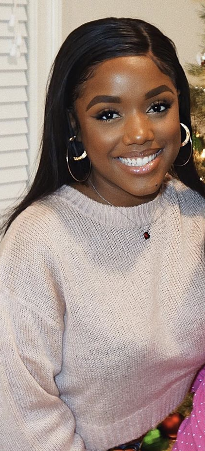
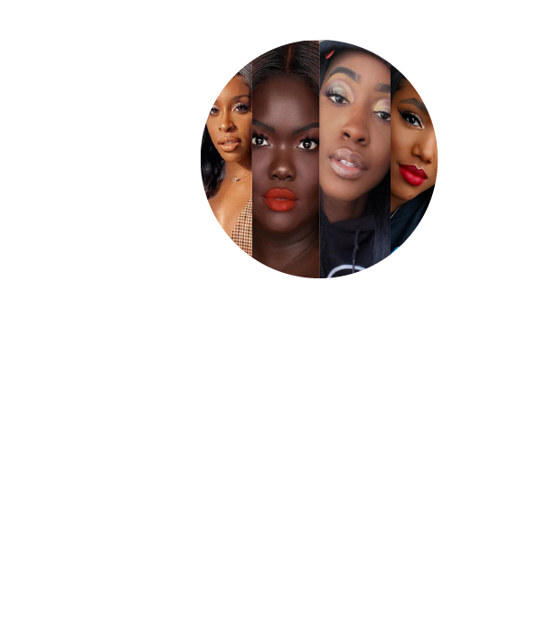
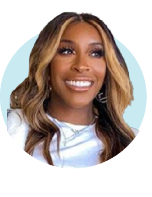
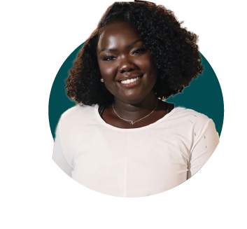
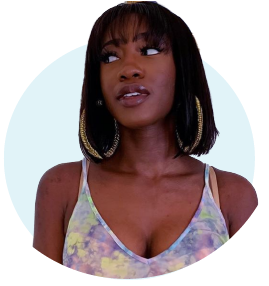

Beauty vlogger and makeup guru Ellarie Noel (who simply goes by her first name) has been on Youtube for years showing other brown girls that makeup possibilities are endless. With 460k followers on her YouTube channel, 1.3 million followers on Instagram and collaborations with brands like ColourPop and Covergirl, she has proven time and time again she is more than just a "token" black beauty vlogger.
When she started out on Youtube she did expect her audience to grow to the magnitude it has reached now. Her humble beginnings of putting her makeup looks online was sparked by the need to create a makeup portfolio. At that time, she was a makeup artist and was attempting to attract clients to her work. As time went on she realized she really loved applying makeup on herself and being a makeup artist was not really what she wanted to do.
“I realize now that what I do actually helps and inspires people of all shades and ages — from my makeup tutorials to my struggle getting started," Ellarie told Yahoo Lifestyle. "The journey to get where I’m at and where I’m going was so worth it!”
Ellarie has worked extremely hard to elevate her brand and serve as a guide in the beauty world. With the changes within the beauty industry today, she notes that the challenges she once faced are slowly diminishing but like so many have said as well, it still needs improvement.
“For the longest time, I was only able to wear a specific brand and a specific foundation because it was difficult for me to find color ranges that suited my skin tone well,” she told Yahoo Lifestyle. “I never understood why brands would narrow their range, because to me that meant they would be narrowing their consumers and profits.”
In a 2017 interview with Cosmopolitan, Ellarie expressed her disappointment on how black women and women with richer skin tones are minimally represented.
"You'll scroll pages and pages of people that are lighter-complected. And you'll see maybe one. It can be discouraging, but I feel like if I let it discourage me earlier on I probably wouldn't have even done this," she said to Cosmopolitan.
Although she feels blessed to be afforded the opportunities that come her way, she does not want brands to reach out to her just to put her in a box as one of their token beauty influencers.
"Our categories are a little bit more competitive, because brands don't tend to work with all of us. I just feel like a brand will choose one and then have that one person speak for the whole shade range," she told Cosmoplotian. "It’s frustrating at times, especially because there's a lot of brown girls, women of color, who have different undertones, different skin types, different everything."
Ellarie acknowledges the climate is experiencing a shift but she hopes that as beauty brands continue to grow they “make it their goal to be inclusive not only with their products, but with their marketing campaigns, social media pages and ambassadors.”
Next article:
   